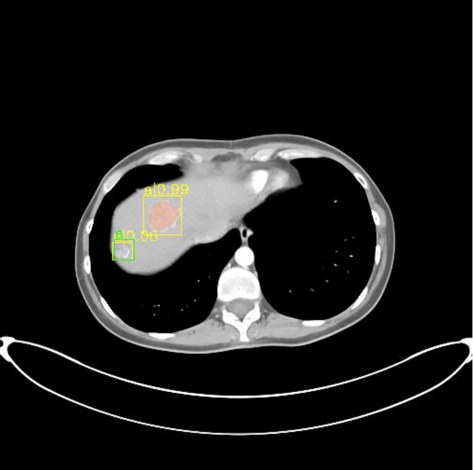
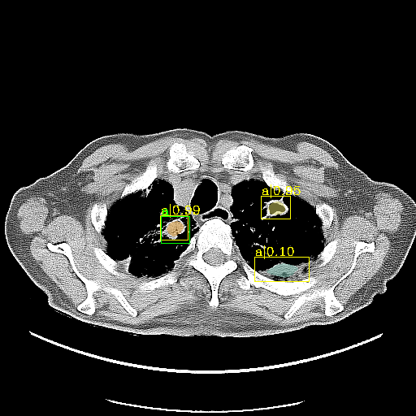

Daniel Li
Computer Science major at Duke University, class of 2020
I'm a university student from Hong Kong. I recently switched my academic focus from mathematics to computer science, and I am currently conducting research in machine learning algorithms for medical imaging. In my spare time, I've been teaching myself computer security using tutorials from OverTheWire. In the past, I also helped design an integrated development environment for the LOGO scripting language. While you're here, feel free to check out my multiplayer fighting game!
In my current research project, I am working on improving detection/segmentation models to isolate lesions from CT scans. Here are some sample predictions made by my machine learning models on the DeepLesion dataset. Green boxes are drawn around lesions marked in the dataset, while yellow boxes are drawn around the model's predictions. The decimals represent the confidence of the model's predictions
 